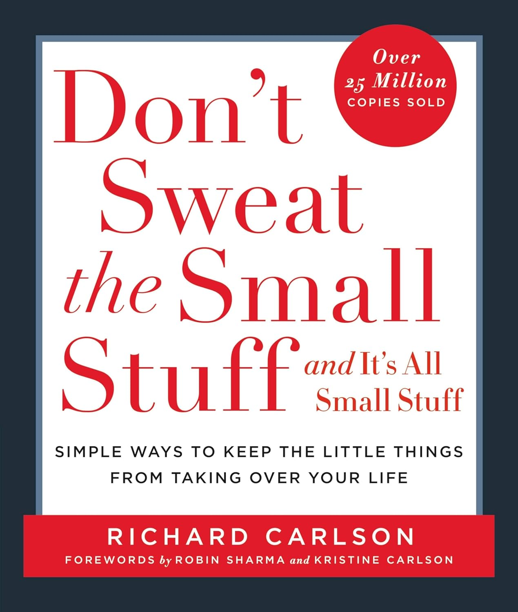

Book Review: Don’t Sweat the Small Stuff... and It’s All Small Stuff by Richard Carlson
My good friend and mentor, Dr. Girish Jha, recently gifted me Don’t Sweat the Small Stuff... and It’s All Small Stuff by Richard Carlson, and I’m truly grateful for it. I started reading it the same day and finished it in a couple of hours. It’s been about a month since I read it, but I keep returning to its pages every night before bed. This book has genuinely changed how I think about life. When I come across a gem like this, I feel compelled to spread the word. This isn’t a traditional book review; every line in the book is so concise and powerful that summarizing it feels impossible. Instead, think of this as a heartfelt pitch from a delighted reader.
What’s the Key Theme?
The book’s core idea is that we waste too much energy fretting over the small stuff in our daily lives—things that, don’t really matter. We’ve become so used to worrying about minor issues that we struggle to distinguish them from what truly deserves our attention. This resonates with another favorite of mine, The Subtle Art of Not Giving a Fuck by Mark Manson, which also urges us to focus on what counts. Carlson lists 100 everyday scenarios where we unnecessarily stress ourselves out and offers practical strategies to let go of these minor irritations. I found his advice not just relatable but actionable.
What Stood Out to Me?
The chapter that hit home hardest—and the one I’ve reread multiple times—is “Choose Your Battles Wisely.” Every day, we face moments where we can either make a big deal out of something or let it slide, realizing it’s not worth the fuss. Too often, we get caught up arguing over trivial matters, turning our days into a cycle of frustration. Life rarely goes as planned, and people don’t always act the way we expect. They have their own personalities, experiences, and ways of doing things, which may clash with ours. But if we fight over every minor issue (like pointing out a small mistake your spouse made) we will spend our lives in constant conflict. Carlson’s advice to pause and ask, “Is this worth it?”.
Why Should You Read It?
If your goal is to live a peaceful, contented life rather than always being “right,” this book is for you. Each chapter is short—under two pages—and the entire book spans just 180 pages, making it an easy yet impactful read. Having tried Carlson’s strategies myself, I can vouch for their effectiveness. They’ve helped me let go of unnecessary stress and focus on what truly matters (like writing this post).
